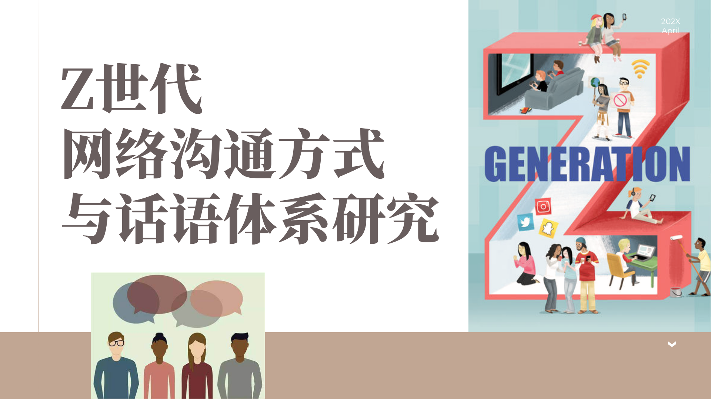

一、Z世代网络沟通特点与建构过程
随着互联网的快速发展，社交媒体已经成为作为第一代“数字原住民”的Z世代生活中不可或缺的一部分。宽松的社会环境为新媒体成熟和发展提供沃土，技术的更新迭代催生了媒介平台，Z世代伴随着移动互联网成长，习惯了通过以社交媒体为代表的各类平台获取信息和知识、释放压力、满足自我表达、社交及娱乐等多方面的需求。[史安斌,王沛楠.2020全球新闻传播新趋势——基于五大热点话题的访谈[J].新闻记者,2020(03):24-32.]
本研究采用文献资料法和网络民族志的研究方法，对网络文本进行分析。研究者于2023年6月至7月，查阅有关网络沟通的资料作为参考，在B站、抖音、新浪微博等大型网络社区进行参与式观察，收集网络语言沟通现象，从中选取有代表性的语词，将其归类整理、筛选提炼。
经过观察、调研、分析，Z世代的网络沟通具有以下特点：（1）通过对语言的再编码和符号化，Z时代创作出了多种形式的网络用语，通过互联网的扩散传播，形成了语言亚文化；（2）在不同社交平台中为自己塑造不同的人设，在面向不同社交圈层时，沟通形式、表达方式会随着人设的切换产生变化。
（一）沟通语言的再编码与符号化
Z世代的网络沟通表达上具有对语言再编码和符号化的特点，他们创作出缩略式、无逻辑式等幽默的表达方式，并将此扩散传播，进而形成语言了亚文化。网络热词是指在网络上广泛流传的、表达某种情感、思想或文化内涵的词语。Z世代通过创造和使用网络热词，更准确、生动地表达自己的情感和看法，更好地融入到了网络社交中。
网络热词的创作和使用已经成为了Z世代沟通的一种文化现象，他们通过创造新的网络热词，表达自己的个性和态度，同时也凭借风趣的表达方式赢得更多的关注和认可。
（二）社交圈层间的多面人设打造
通过对互联网现象的总结分析，参考博报堂生活综研(上海)发布的生活者“动”察2021研究成果，我们将Z世代在互联网社交平台上的沟通情况分为两种：近圈与远圈。Z世代在不同社交平台上以不同的形式展现自我，尝试为自己塑造不同的人设，呈现出了收放自如的状态，在不同社交圈中游刃有余。
1.近圈沟通
“近圈”是相对来说与现实生活联系更为紧密的社交平台，其添加的好友大多为生活中认识的朋友、同学、长辈等，如微信、贴贴等社交软件。与其他社交平台相比，近圈更注重人际关系的维护和发展，是现实生活在网络平台上的延伸。近圈社交平台的功能更加注重真实互动，如语音聊天、视频通话、红包转账等功能，为人们提供了一个便捷、安全、实用的交流互动平台，帮助人们更好地维护和发展人际关系。
在近圈中，Z世代的沟通话题以展现个人生活为主，在与不同类型的好友交流时会呈现出不同的状态，如建立微信分组，与不同身份的好友沟通时使用不同风格的表情包，从而展现出不同的人设。但与此同时，随着近年竞争压力的不断增大，Z世代开始倾向于与身边的同学、同事保持一定的距离感，不愿意过多展现自己进行学习、自我提升的生活，出现了“偷偷学习，卷死他们”等表达方式。
2.远圈沟通
远圈是相对而言离现实生活更加遥远的网络空间，其多数用于在网络平台寻找兴趣爱好相近的同好，以此为主题共同交流，但不会过多透露个人信息。这种交流不仅可以满足人们的社交需求，还可以拓展人们的知识面和视野。
面临日益激烈的竞争环境，00后积极运用“远圈中的第三方力量”。“近圈中的人（经常见面的熟人）尽管和自己关系融洽，但也可能出现竞争关系”，为避免成为互相比较和嫉妒的对象，00后不倾向于求助近圈，而是选择掩盖自己的真实想法。社交网络的发展让年轻人可以容易地在远圈中与自己志趣相投的人取得联系，正是因为有一定距离的存在，才可以得到对方给予的更加客观的反映。对Z世代而言，远圈中轻松自在的关系可以暂时让自己从现实的人际关系中暂时解放出来。[钟鸣.博报堂生活综研(上海)发布生活者“动”察2021研究成果.https://www.hakuhodo.cn/news/hill-shanghai-announces-research-findings-on-chinas-post-00s.html]
二、网络沟通特点的原因
（一）对标新立异、与众不同的向往
符码再编实现的意义生产本身并不是目的，远离主流文化的话语实践，以一种具有不同词汇特征的语言形式凸显差异，通过对主流话语秩序的突破寻求新的阐释方式，并在符号互动中达成意义认同才是其现实目的。[陈帅.论当代青年的圈层认同感的话语建构[J].中国青年研究,2020,No.297(11):80-86.DOI:10.19633/j.cnki.11-2579/d.2020.0167.]
对于Z世代来说，不断创作、使用、传播网络热词的原因在于个体对标新立异、与众不同的向往，他们希望通过创作新的表达方式来凸显自己的个性和独特性，在这个充满竞争和压力的社会中，藉由独特的表达方式在互联网平台中脱颖而出。[ 陈帅.论当代青年的圈层认同感的话语建构[J].中国青年研究,2020,(11):80-86.]在更加开放的网络环境下，个体的兴趣发展得到支持与赞扬，趋向多元。
（二）对群体认同感的追求
出于对群体认同感的追求，Z世代为了得到社交圈层的接纳与认可，乃至拥护，往往会根据不同的社交圈层来调整自己的形象和沟通方式，以符合该社交圈层的价值观和规范。个体要被文化接纳为其内部的成员，必须要对这种文化种种外在的表述方式、行为特征、仪式等作出适宜的反应，以避免成为边缘人；而模仿无疑是成本最低、效果最可预见的一种方式，就像生物基因通过自我复制来完成生物体征的传承和进化一样。[常江,田浩.迷因理论视域下的短视频文化——基于抖音的个案研究[J].新闻与写作,2018(12):32-39.]
Z世代大量创作和使用网络语言，在不同圈层间为了融入自我而进行自我调整，打造不同人设，反映了Z世代对群体认同感的追求，他们通过感受到自己与其他人之间的共同点，产生强烈的归属感和安全感。
三、网络沟通方式与话语体系更迭带来的影响
（一）积极影响
1.拓宽自我表达的维度
与传统的日常表达方式相比，Z世代的网络用语更加具有创意性、幽默感和讽刺意味。这些网络用语不仅可以让人们在沟通中更加轻松愉悦，还能够拓宽自我表达的维度，产生积极影响。
网络流行语中常常会出现一些新词、缩略语和表情符号，善于使用夸张、比喻和反讽等修辞手法，在互联网沟通中，使用一些共同的网络用语可以增进彼此之间的理解和亲近感，起到缩短距离、增进友谊的作用，使得人际交流更加轻松愉快。网络用语可以更生动地表达自己的情感和想法，用更为直白、夸张的语言直接抒发情感，将新兴的语言模式融入日常沟通表达，拓宽了自我表达的维度。
2.促进个性化发展
互联网沟通的圈层化趋向使得Z世代能够更容易地找到与自己志同道合的朋友。在这个信息爆炸的时代，人们容易感到孤独和迷失，网络圈层的出现为年轻人提供了一个互相交流、分享兴趣爱好的平台，帮助他们更快地建立社交网络，促进个性化发展。
圈层化也使得Z世代更加容易接触到不同的文化和思想。在过去，由于交通和信息的限制，人们只能与身边的人交流，难以了解外面的世界。网络圈层的出现使得年轻人可以通过网络接触到来自不同地方、不同文化背景的人。这种交流不仅能够拓宽他们的视野，还能在接触新事物的过程中发掘内心兴趣和志向，达到个性化发展的目的。
（二）消极影响
1.冲击标准语言体系
网络语言的流行固然丰富了互联网沟通的方式，但也导致了语言同质化现象的出现。由于网络语言的使用范围广泛，很多人都在使用相同的词汇和表达方式，可能会影响人们的写作能力和语言表达能力。
网络语言通常都是简单、口语化的表达方式，人们很容易陷入这种语言模式中，从而忽略了规范化的语言表达方式。随着网络用语的流行，一些人开始忽略标准语言的规范和准确性，使用不规范、不合理的语言表达方式，对标准语言体系产生了冲击。
2.表达效率受到圈层局限
网络沟通的圈层化会限制人们的表达效率。由于圈层内的人们具有相似的背景和知识储备，他们之间的交流往往是基于共同理解的前提下进行的，并且为了快速交流诞生了缩写、代号等小众符号语言，在同一圈层内可以顺利传播，但不同圈层之间沟通便难以进行。在某些情况下，即使是相似的话题，不同圈层之间也难以理解对方所表达的意思，从而影响了交流效果。
社交媒体圈层化通过这样的方式会影响人们的行为，使人们只与自己感兴趣的人或话题进行沟通，导致人们变得越来越偏执和孤立，对于社会和他人的关注度降低。这样的负面效应会导致人们的社交能力和情感认知能力下降，对于人际关系的建立和维护能力也会受到影响。
四、结论
Z世代是一个与互联网紧密相关的群体，他们的网络沟通具有语言再编码和符号化、不同圈层中打造不同人设的特点。
这些特点的背后是求同、求异心理的共同作用，反映了Z世代对群体认同感的追求和对独树一帜的向往。Z世代成长于信息爆炸的时代，他们在网络上获得了大量的信息和知识，也更容易受到网络上的各种信息和事件的影响，进而产生从众心理的同时，也希望能够一定程度上体现自己的与众不同。
了解和接受这些特点，可以帮助我们更好地理解和适应未来社会的发展趋势。在未来，随着Z世代逐渐成为社会的主流群体，他们的价值观和生活方式将会对整个社会产生深远的影响。
参考文献
[1]王沛楠.视听、情感与算法：西方Z世代的社交媒体偏好转向[J].青年记者,2022,No.733(17):96-98.DOI:10.15997/j.cnki.qnjz.2022.17.023.
[2]戴仁卿,刘彬.“Z世代”群体网络流行语传播力研究[J].文化创新比较研究,2022,6(23):66-69.
[3]汪永涛.Z世代网络文学的阅读方式：以注意力经济为视角[J].中国青年研究,2022,No.320(10):87-94.DOI:10.19633/j.cnki.11-2579/d.2022.0137.
[4]胡洪江.跨越代沟：面向Z世代的媒体话语审视与表达创新[J].青年记者,2022,No.739(23):16-18.DOI:10.15997/j.cnki.qnjz.2022.23.004.
[5]赵田明.B站“Z世代”的群体认同——以《说唱新世代》为例[J].美与时代(下),2023,No.982(03):141-145.DOI:10.16129/j.cnki.mysdx.2023.03.022.
[6]李英华.“Z世代”青年心理透视:语言亚文化的视角[J].新闻与传播评论,2023,76(03):83-91.DOI:10.14086/j.cnki.xwycbpl.2023.03.008.
[7]戴仁卿,刘彬.符号娱乐与圈层文化——“Z世代”网络语言流行现象解读[J].湖南大众传媒职业技术学院学报,2022,22(01):13-15+25.DOI:10.16261/j.cnki.cn43-1370/z.2022.01.004.
[8]任梓楠. Z世代的网络表达及其话语体系构建研究[D].上海师范大学,2021.DOI:10.27312/d.cnki.gshsu.2021.000111.